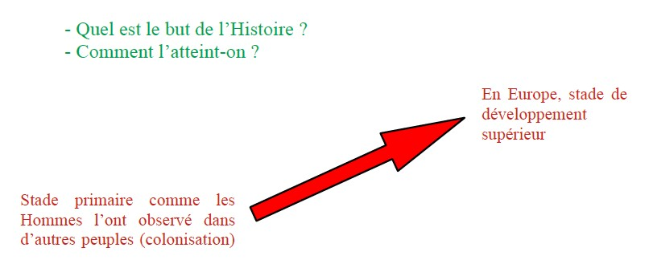
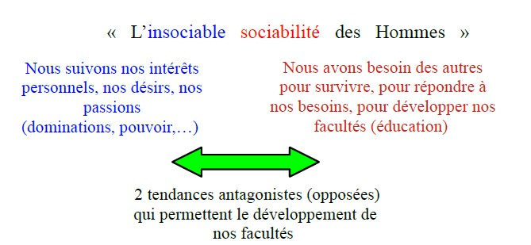
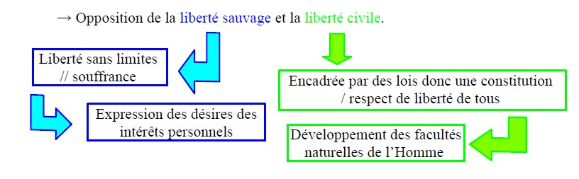
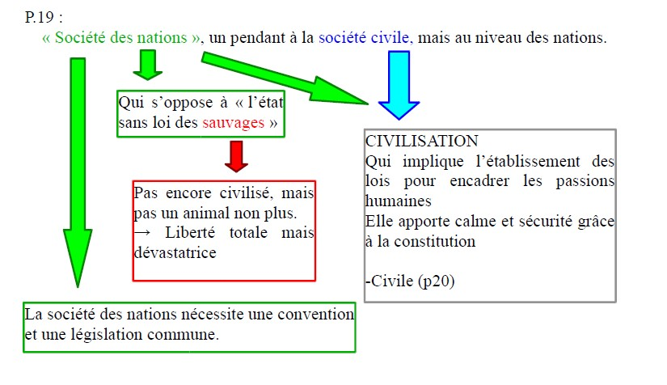

[Extrait de la deuxième proposition à venir]
⏳ Le contenu de cet extrait n'est pas encore disponible. Veuillez revenir plus tard.
Le sens de l'Histoire et le progrès moral de l'humanité
Dans cet essai philosophique, Emmanuel KANT vise à montrer que l'Histoire a un sens, c'est-à-dire que le cours des événements humains ne se déroule pas simplement au hasard.

Pour KANT, le hasard n'est qu'apparent. En réalité, nos actions sont déterminées par la Nature qui s'organise selon des lois universelles.
Ainsi, ce qui semble désordonné et irrationnel dans l'Histoire du point de vue de l'individu, se révèle du point de vue de l'espèce humaine comme un « développement progressif et continu de ses dispositions originelles ».
[Extrait de la deuxième proposition à venir]
⏳ Le contenu de cet extrait n'est pas encore disponible. Veuillez revenir plus tard.
KANT propose de chercher s'il n'existe pas un « dessein de la Nature », c'est-à-dire un but de la Nature qui suit des règles. Il envisage que derrière les actions humaines passionnelles, intéressées, chaotiques, irrationnelles, il existe un ordre rationnel.
└> Cela pose la question du déterminisme dans les actions humaines.
Toutes les dispositions naturelles d'une créature sont destinées à se développer un jour complètement et conformément à une fin.
Cela se vérifie chez tous les animaux, aussi bien par l'observation externe qu'interne ou anatomique. Un organe qui ne doit pas avoir d'usage, un agencement qui n'atteint pas sa fin, sont une contradiction dans l'étude téléologique de la nature. Car si nous abandonnons ce principe, nous n'avons plus une nature conforme à des lois mais un jeu de la nature sans finalité ; et le hasard désolant remplace le fil directeur de la raison.
- Références à ARISTOTE :
1- en puissance / en acte
2- La téléologie (τέλος, en grec téléos : but)
Pour ARISTOTE, la Nature suit une finalité.
Ex : un organe est naturellement voué à une fonction.
└> Les productions naturelles ne sont pas des échecs, mais chacune a sa place.
[Extrait de la deuxième proposition à venir]
⏳ Le contenu de cet extrait n'est pas encore disponible. Veuillez revenir plus tard.
→ La Nature a doté l'Homme d'une rationalité qui lui sert à développer toutes ses facultés (technologiques, intellectuelles, artistiques, etc.)
Ce développement des facultés se réalise dans le cadre de l'espèce humaine.
La vie d'un seul individu n'est pas suffisante pour le rendre possible. └> L'Homme peut devenir plus que ce qu'il est.
Car il n'est pas enfermé dans les limites de son instinct, contrairement à l'animal.
L'Homme est capable de faire des projets qu'il se propose lui-même, il est donc libre.
La raison dont est doté l'Homme par la Nature permet le progrès de l'humanité, c'est-à-dire de l'espèce humaine, par « essais », « exercices », « enseignements » : accumulation des savoirs et des savoir-faire.
L'existence de l'individu est trop courte pour permettre cette évolution qui a donc lieu au sein de l'espèce.
⧓ Cette évolution est évaluée pour la réalisation du dessein de la Nature.
⧓ Cette évolution est évaluée par la Nature.
[Extrait de la troisième proposition à venir]
⏳ Le contenu de cet extrait n'est pas encore disponible. Veuillez revenir plus tard.
→ L'Homme, même s'il est également un animal, n'a pas d'instinct, mais il possède une raison. Celle-ci permet à l'Homme de dépasser les obstacles auxquels il est confronté, de progresser ; ainsi, il doit ce qu'il invente ou ce qu'il fait à lui-même.
└> estime de soi ≠ l'orgueil
- Référence à ARISTOTE : « sur la main » / « intelligence »
- Référence à PLATON : le mythe de PROMÉTHÉE (les animaux sont dotés par la Nature de tout ce dont ils ont besoin pour la survie de l'espèce)
→ Le travail de chaque génération permet à la suivante de mieux vivre.
[Extrait de la quatrième proposition à venir]
⏳ Le contenu de cet extrait n'est pas encore disponible. Veuillez revenir plus tard.
→ La Nature utilise les oppositions (les désaccords, les guerres, les conflits, …) entre les Hommes pour atteindre son objectif qui est le développement complet des facultés humaines.
Ces oppositions seront résolues grâce à l'établissement des lois.

→ Ces deux tendances en tension visent à établir une morale par les lois. Ces deux tendances nécessitent un cadre afin de les canaliser, ce seront les lois établies par la société. Ainsi le progrès généré par cette double tension (concurrence, rivalité, entraide,…) va pouvoir mener au progrès moral, par l'intermédiaire des lois.
→ Comparaison avec l'Arcadie afin de souligner la nécessité des conflits, des guerres pour le progrès.
De cette tendance conflictuelle des Hommes on peut déduire que quelque chose agit à travers les actions des hommes pour réaliser le progrès moral, but ultime de la Nature.
[Extrait de la cinquième proposition à venir]
⏳ Le contenu de cet extrait n'est pas encore disponible. Veuillez revenir plus tard.

→ Pour cadrer cette liberté sauvage, il faut fonder une société civile qui va établir des lois justes.
→ Métaphore des arbres dans la forêt : les arbres sont en concurrence les uns avec les autres, pour atteindre le soleil. ≠ Quand il y a peu d'arbres, ils sont en totale liberté et poussent dans tous les sens, pas droit.
[Extrait de la sixième proposition à venir]
⏳ Le contenu de cet extrait n'est pas encore disponible. Veuillez revenir plus tard.
→ L'Homme est un animal : il suit ses désirs, ses intérêts.
→ C'est pour cela qu'il a besoin d'un maître qui va établir des lois pour que la société soit possible.
→ PROBLÈME : le maître est aussi un être humain qui suit ses désirs.
Il faudrait que ce maître soit juste, droit, sans avoir besoin de lois pour le cadrer. ⇒ IMPOSSIBLE
→ Nécessité d'établir une constitution : mais comment faire pour qu'elle soit la plus juste possible ?
[Extrait de la septième proposition à venir]
⏳ Le contenu de cet extrait n'est pas encore disponible. Veuillez revenir plus tard.
→ On retrouve l'« insociable sociabilité » au cœur des États : chaque État cherche à satisfaire ses intérêts personnels. Donc on a besoin de lois internationales pour garantir la prospérité et la paix de chacun.

→ Cette législation permettra de maintenir cet état de paix entre les États, de façon automatique = cela se réalise tout seul, sans intervention humaine.
→ Pas de hasard dans l'histoire ; la nature, à travers les actions humaines, réalise le progrès moral de l'Homme.
→ Emmanuel KANT croit en la présence d'un projet naturel dans les actions humaines, à travers les conflits, l'expression des passions.
Il croit au progrès moral des Hommes. Sinon cela n'a aucun sens.
└> C'est rationnel de penser / croire qu'il y a bien ce but.
└> Il y a un besoin d'un droit international qui permettra d'aboutir à ce développement moral, mais chaque État doit également promouvoir une liberté civile en son sein. En effet, la référence à Jean-Jacques ROUSSEAU montre que le progrès des sciences et des arts ne rend pas inévitablement les Hommes plus vertueux.
→ Emmanuel KANT, comme ROUSSEAU, souligne que la politesse et la bienséance ne suffisent pas et peuvent cacher la haine, la jalousie entre les Hommes (une simple apparence).
→ Ce que recherche Emmanuel KANT à travers cette croyance dans le progrès moral des Hommes, c'est une paix perpétuelle, d'où résultera pour l'humanité la possibilité de s'améliorer moralement.
[Extrait de la huitième proposition à venir]
⏳ Le contenu de cet extrait n'est pas encore disponible. Veuillez revenir plus tard.
« Millénarisme » : une forme de croyance eschatologique qui promet l'avènement d'une ère radicalement nouvelle qui mettra fin aux souffrances que nous connaissons.
→ Il suppose la possibilité de connaître l'avenir, qui sera fait de bonheur et de liberté.
→ Emmanuel KANT imagine un État libéral où règne le plus de liberté possible dans les limites des lois (morales / justes). Il prône la liberté religieuse. C'est la réalisation des Lumières.
→ Emmanuel KANT note aussi que l'indépendance des États, des personnes n'ont pas intérêt à entrer en conflit. C'est pourquoi chaque État, dans sa concurrence avec les autres, doit veiller au développement des sciences et des technologies. Ainsi, il contribue au progrès de l'humanité.
→ Ce progrès de l'humanité signifie le développement des facultés humaines et de la moralité.
[Extrait de la neuvième proposition à venir]
⏳ Le contenu de cet extrait n'est pas encore disponible. Veuillez revenir plus tard.
→ Emmanuel KANT envisage l'histoire au point de vue cosmopolitique et expose le plan général d'une histoire universelle de l'humanité comme progrès, des Grecs jusqu'au XVIIIe siècle.
→ Il pose la nécessité d'une histoire philosophique qui découvre un dessein de la nature dans les actions humaines, qui contribuent à la réalisation de ce dessein.
→ À travers notre histoire, la fin (=le but) de la nature est notre destination pratique, c'est-à-dire la fin que notre devoir (obligation morale) nous dicte.
→ Importance d'une histoire philosophique qui permettrait de prévoir l'avenir.
→ La morale : ce qui compte ce sera la valeur de nos actions et de leurs conséquences.
→ Cette téléologie de l'histoire s'adresse essentiellement aux historiens futurs, car il est nécessaire que chaque citoyen connaisse le passé pour suivre le dessein de la nature dans l'histoire et qu'il agisse en conséquence.
→ L'histoire est la mémoire des peuples libres, tandis que l'oubli fait l'esclavage et la barbarie.
📄 Veuillez trouver la version PDF de ce cours ci-dessous 😇
📥 Télécharger le PDF